Float Goat V2
A portable wave-energy converter that turns the rise and fall of a buoy into battery power for off-grid island communities in the Philippines.

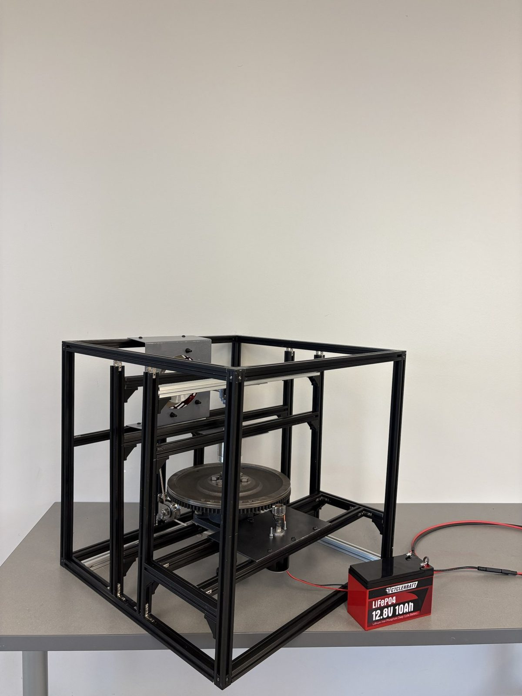
Problem
More than 4 million households in the Philippines lack reliable electricity, and many rely on costly, polluting diesel generators. Coastal communities are surrounded by a free energy source: ocean waves. An earlier student prototype converted wave motion into electricity, but it wobbled, its gear train was misaligned and its output was unstable.
Our team redesigned its mechanism and added a battery-charging system. A rope pulled by each wave turns a gear train that spins a small generator, and the generator charges a battery.
My Role
Mechanical Design Lead on a team of four. My individual contributions:
- CAD: reverse engineered the previous team's prototype into SOLIDWORKS 2025 from hand measurements, then modeled the full mechanical system through three iterations (Alpha, V1, V2)
- Gear train: ran the gear ratio and generator torque calculations that set the drivetrain (with Blair Bishop)
- Custom parts: designed and prototyped the recoil adapter, flywheel-clutch adapter and shaft, mounting plates and the 3D-printed electrical box; machined the final recoil adapter on a Tormach PCNC 440
- Validation: checked our electrical calculations against the previous team's test data (with Blair Bishop)
Testing, the electrical system and the final build were team work.

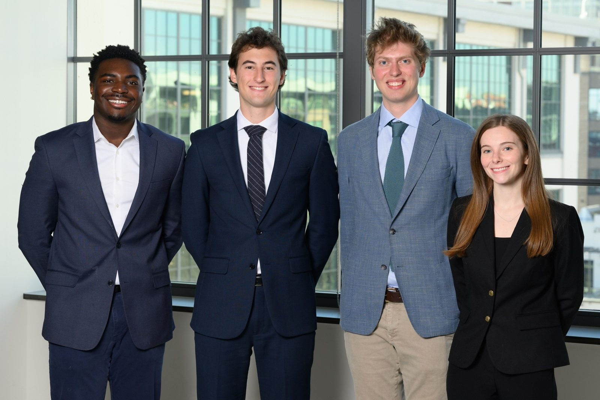
Design Targets
Requirements and what the evidence supports. Size is met by the frame dimensions; weight is a CAD estimate; power, lifespan and battery capacity were not demonstrated.
| Requirement | Target | Result | Basis |
|---|---|---|---|
| Size | Packed ≤ 2.44 × 1.58 × 1.11 m (small pickup bed, 5% clearance) | ✓ 0.525 × 0.525 × 0.485 m frame | Frame dimensions |
| Weight | ≤ 50 kg (two-person lift) | ✓ 20.57 kg | SOLIDWORKS mass estimate, not weighed |
| Power | 0.3125 per simulated 0.5 m wave (see note) | Not demonstrated: 0.6–0.9 W measured during hand pulls; energy per pull not measured | Measured power; target is energy |
| Lifespan | ≥ 2 years (≥ 365 battery cycles) | Not tested: battery is rated for 5,000 cycles | Component specification |
| Battery capacity | Charge a ~3 kWh battery | ✗ Tested on a 128 Wh battery (time limits) | Not tested at 3 kWh |
The power target was derived as 3,000 Wh per day ÷ 24 h ÷ 400 waves per hour = 0.3125 per wave. That quantity is energy per wave (0.3125 Wh), not power, so the 0.6–0.9 W measured during a pull cannot be compared with it directly.
How It Works
- As the buoy rises, a rope pulls a recoil starter, the same mechanism used to start a lawnmower.
- A 90° bevel gearbox turns the drive downward, and a 1:15 planetary gearbox and an 8:105 pinion on the flywheel raise the speed from about 20 RPM to about 4,000 RPM at the generator.
- A freewheel clutch lets the flywheel keep spinning while the recoil starter rewinds between waves.
- The generator produces electricity, and a boost converter and charge controller regulate it to charge a 12.8 V battery.

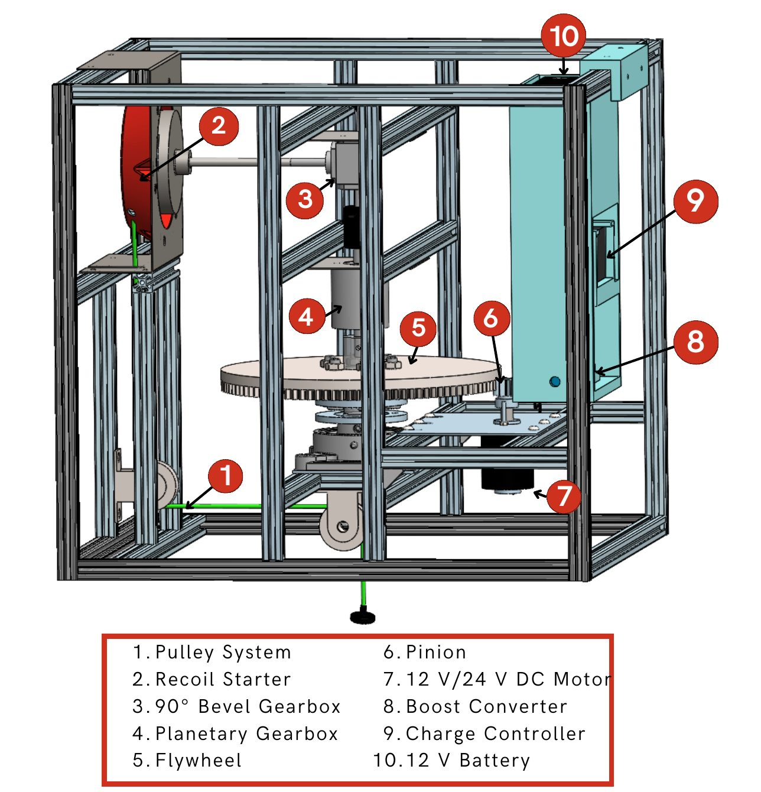

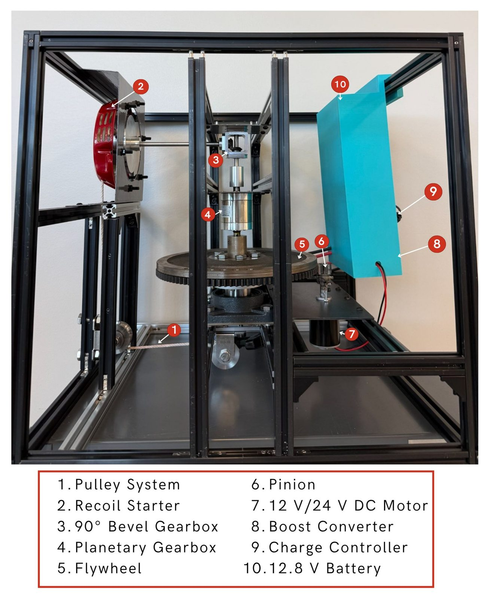

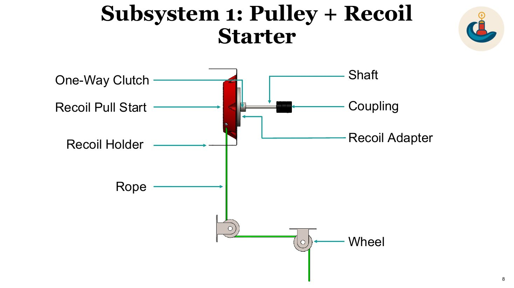

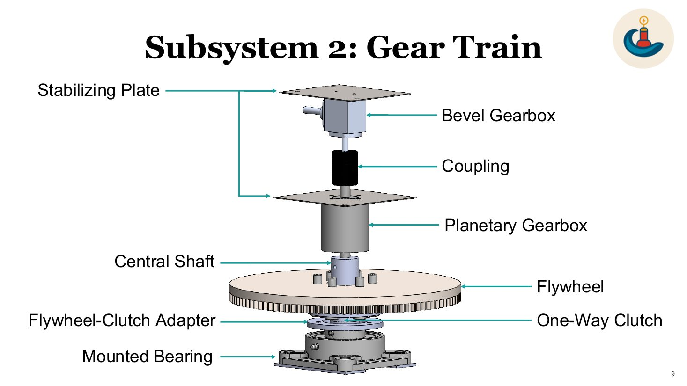

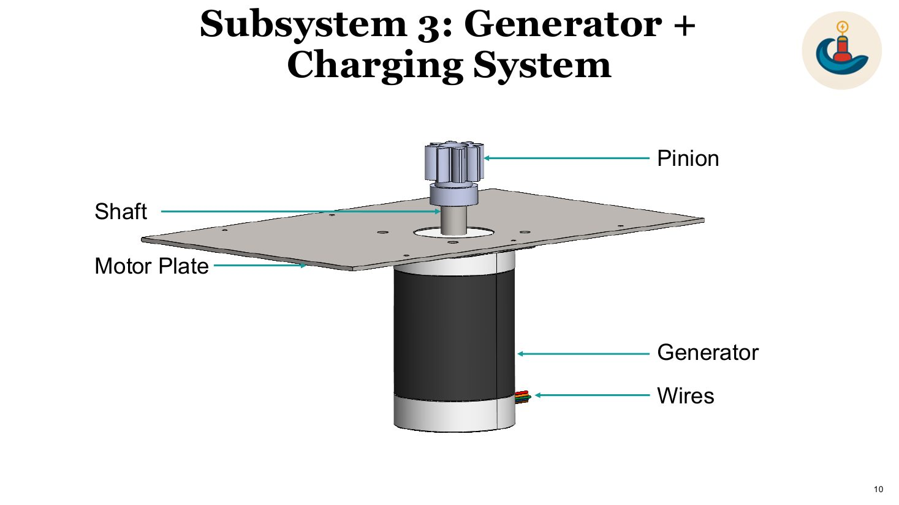
01Reverse Engineering & Layout
No usable CAD existed for the inherited prototype, so I rebuilt it in SOLIDWORKS from hand measurements. Its gear train sat off to one side, which caused the wobble. In a weighted decision matrix (structural support, weight distribution, power generation), a vertically aligned gear train scored 12, against 7 for the original layout and 5 for a horizontal one.
A second matrix then moved the ~20 lb flywheel from the top to the bottom of the system. A lower center of mass raises the tipping angle, and the reversed layout scored 10.75 against 9.5 for flywheel-on-top.

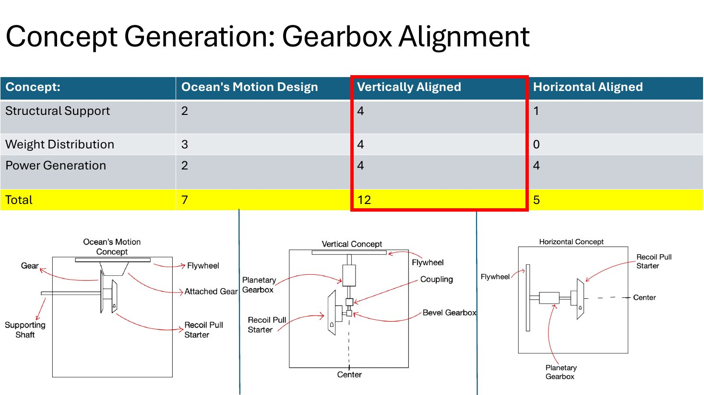

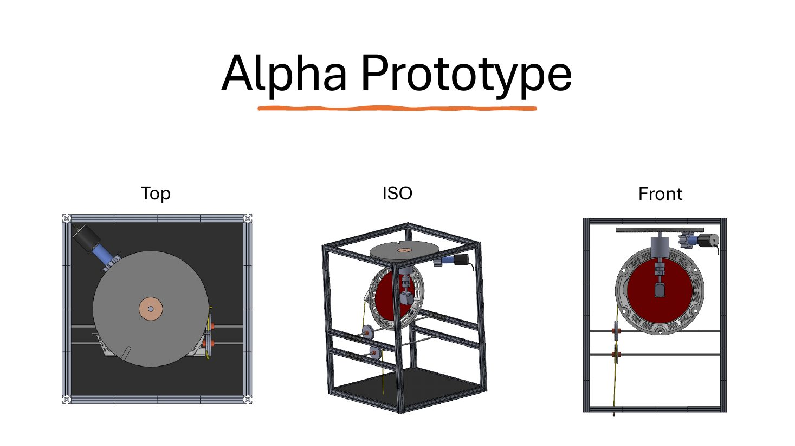
02Sizing the Gear Train
The design input was a moderate wave: 0.5 m of rope travel every 4 s on a 0.115 m recoil pulley, which gives about 20.8 RPM at the input. Each stage after that raises speed and lowers torque by the same ratio:
The bevel gearbox only turns the drive 90°. Because the planetary gearbox divides torque by 15, V1 testing delivered 0.42 N·m to the generator, below its 0.60 N·m torque rating, so the drivetrain stalled. That result drove the switch to a lower-torque 12 V brushed DC motor in V2.
03Designing & Machining Custom Parts
Most purchased parts came without CAD or drawings, and no off-the-shelf part joined them. I measured them with calipers, modeled the connecting parts and iterated with 3D prints before making the finals.
- Recoil adapter: transfers the recoil starter's rotation to an 8 mm shaft. The previous team's version was a PLA part glued in with epoxy. Mine has slots that key into the recoil's inner diameter, and set screws clamp a locking needle-roller bearing on the shaft so it can't slip. Eight printed iterations closed the gap to the recoil housing; the final is CNC-machined aluminum with hand-tapped bolt holes.
- Flywheel-clutch adapter and shaft: no clutch fit both the flywheel's 43 mm bore and the gearbox's 12 mm shaft, and a plain sprag clutch could not carry the gear train's axial thrust load. A decision matrix picked a freewheel clutch inside a custom adapter on a custom shaft (10 vs. 7 for the next option). The adapter bolts around the clutch with six threaded holes that match the flywheel's six clearance holes. Four printed iterations.
- Recoil bracket and gearbox braces: plates that hold the recoil starter and both gearboxes, printed for fit before the final sheet-metal parts.
- Electrical box: a 3D-printed housing for the battery, charge controller and boost converter that hangs from the frame.

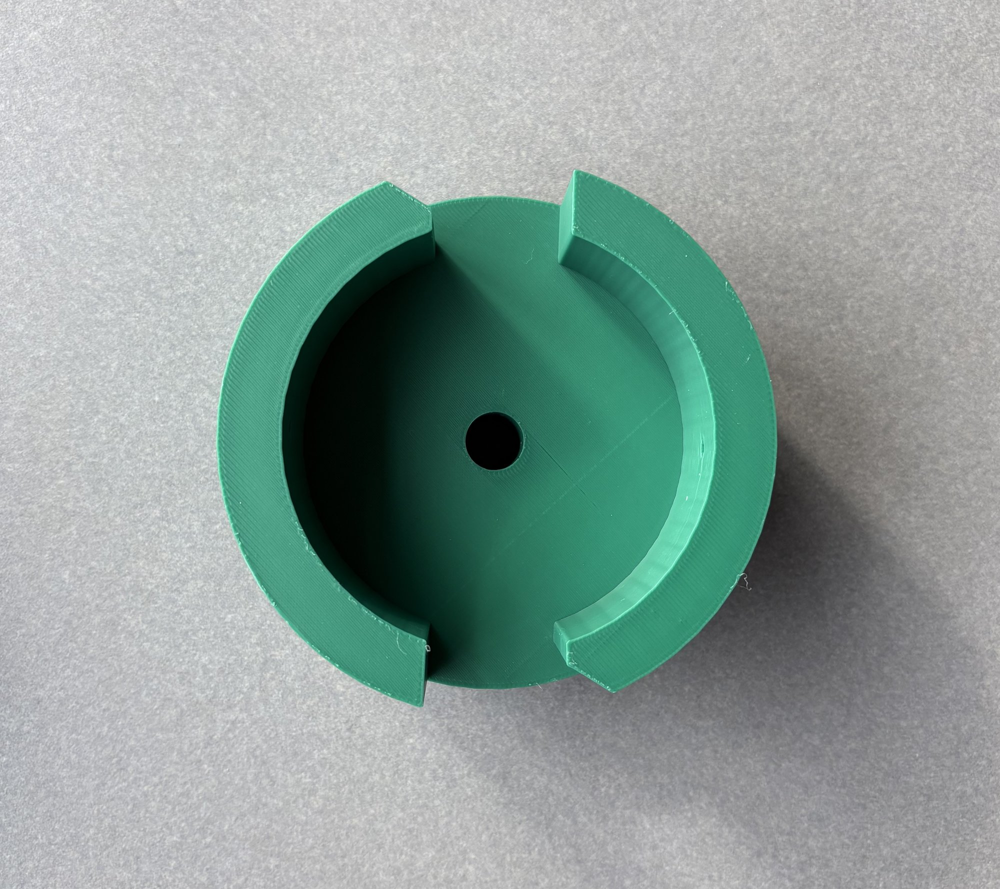

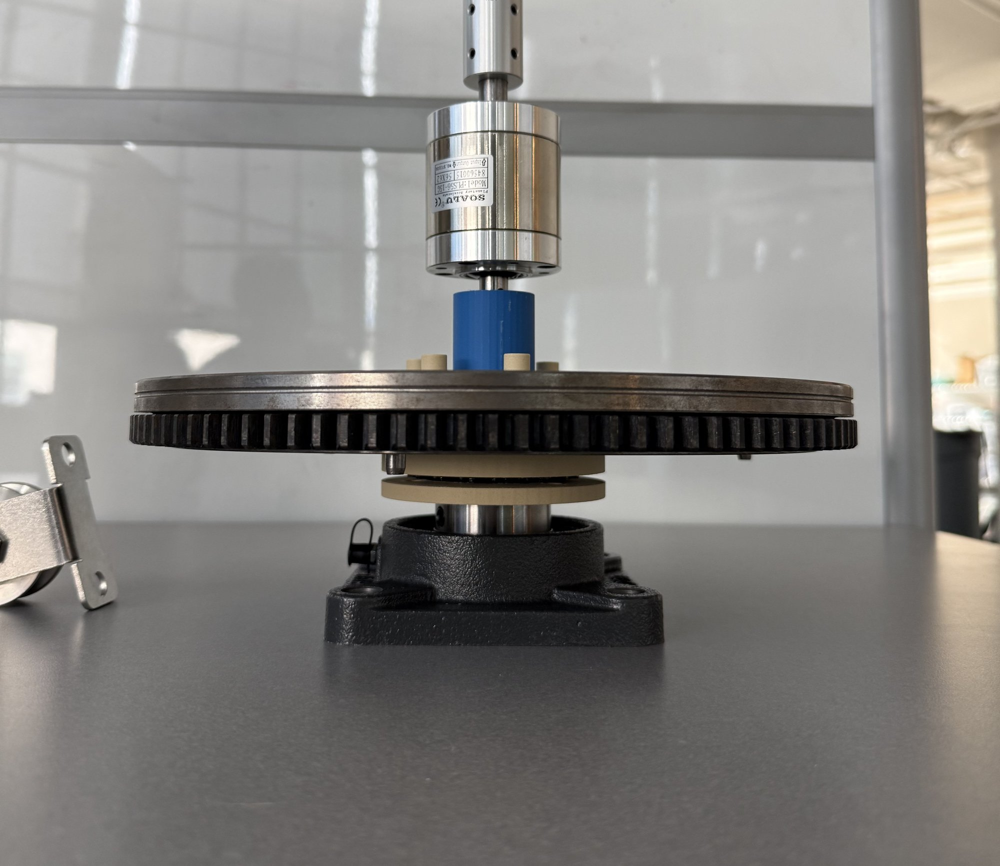

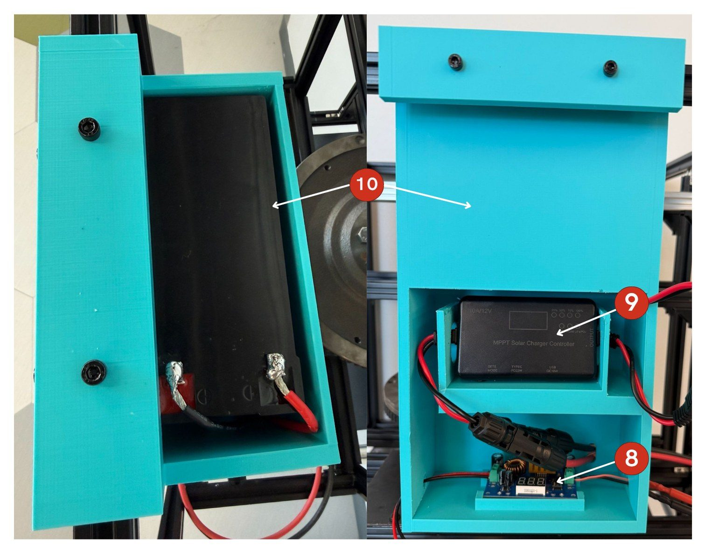
04Test, Fail, Fix (V1 → V2)
Before building, the team ran an FMEA that scored each failure mode for occurrence, severity and detection. One example:
| Subsystem | Failure mode | Initial RPN | Mitigation | Re-scored RPN |
|---|---|---|---|---|
| Shaft + bearing | Shaft play or misalignment, causing friction and wear | 32 | Mechanical fasteners instead of friction joints; alignment control; thrust-load handling | 16 |
Re-scored RPNs are the team's estimates after mitigation, not test results. Testing the first full build then revealed three problems:
| Problem | Fix |
|---|---|
| The coupling between the recoil-adapter shaft and the bevel-gearbox shaft slipped and, from the heat, partly bonded to both shafts, so rotation stopped at that joint | Replaced the two shafts and the coupling with one continuous shaft from the recoil adapter into the bevel gearbox, removing the joint that slipped |
| The generator's torque rating was 0.60 N·m; the drivetrain delivered 0.42 N·m | Switched to a lower-torque 12 V brushed DC motor and rebuilt the electrical system around it |
| The aluminum frame was misaligned, and steel parts rusted in humid storage | Remeasured and re-cut the frame to millimeter-level precision; sealed the steel with primer and enamel |
After these fixes, the full drivetrain ran and charged the battery in all three test pulls below.

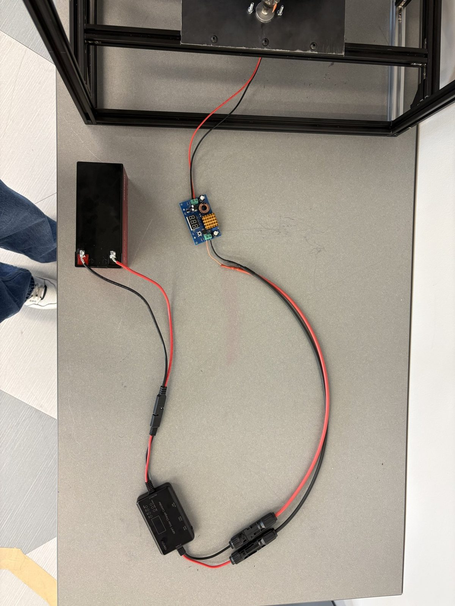

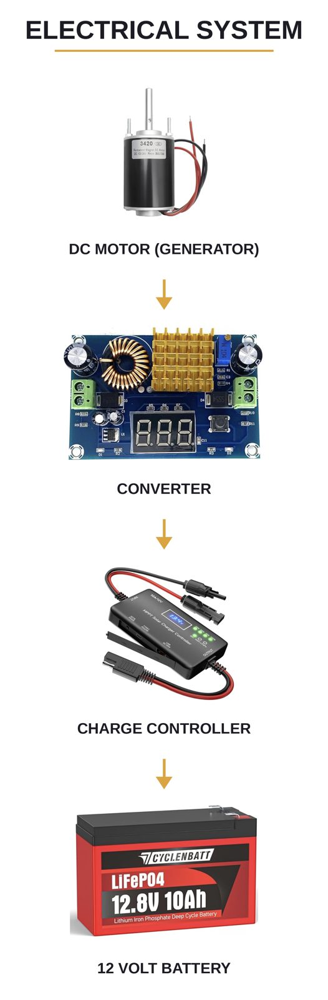
Results & Impact
- Test setup: the rope was pulled by hand to simulate a wave, so pull speed and stroke varied between trials. The generator charged a 12.8 V, 128 Wh LiFePO4 battery through the boost converter and charge controller. Three trials.
- Power: battery input power during each pull was 0.6–0.9 W (average 0.8 W), calculated from measured voltage (about 13 V) and current (0.05–0.07 A). Energy per pull was not measured.
- Drivetrain speed: measured RPM at five points from the input shaft to the generator pinion was 6.5–26.9% below the calculated values. The 15% figure is the mean of those five percent differences. The largest losses were at the slow input stages, which points to friction and clutch slip.
- Status: a bench proof of concept with no buoy or anchor yet, not tested in water. Prototype parts cost $571.
- Next steps: buoy and reef-safe anchor, IP68 marine sealing, capturing energy on both rise and fall, measuring energy per pull with controlled stroke and timing, and an easy battery swap with solar backup.

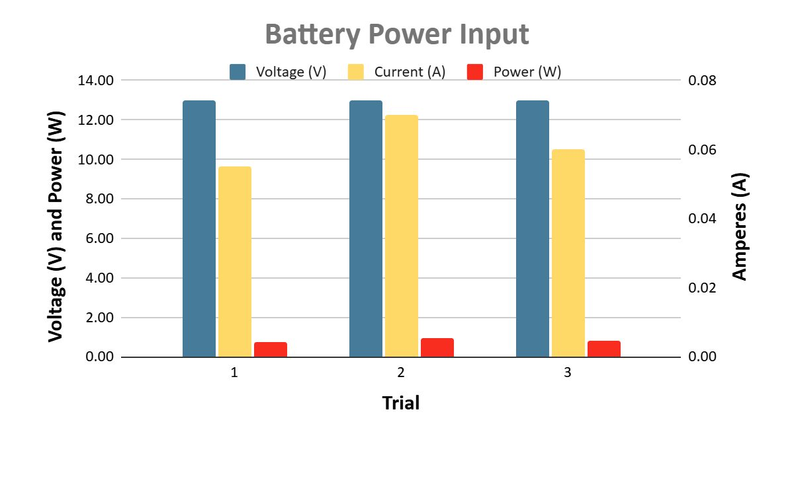

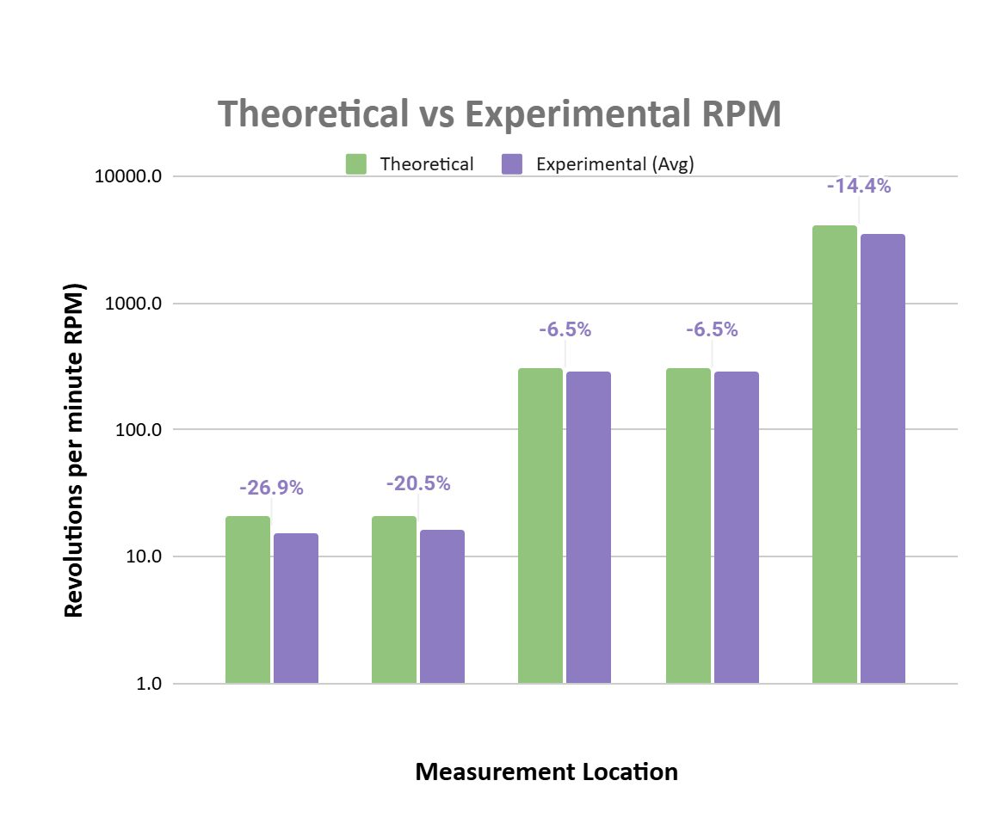
Showcase
Presented at the Wake Forest Engineering capstone showcase. Project coach: Dr. Courtney Di Vittorio.


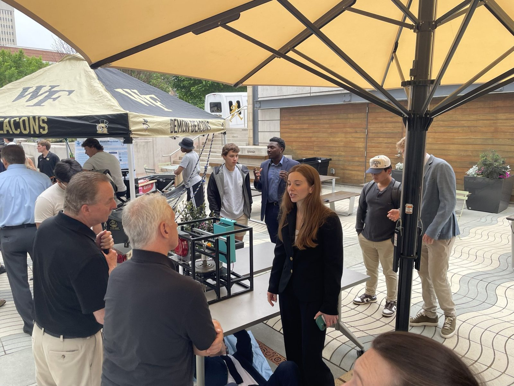

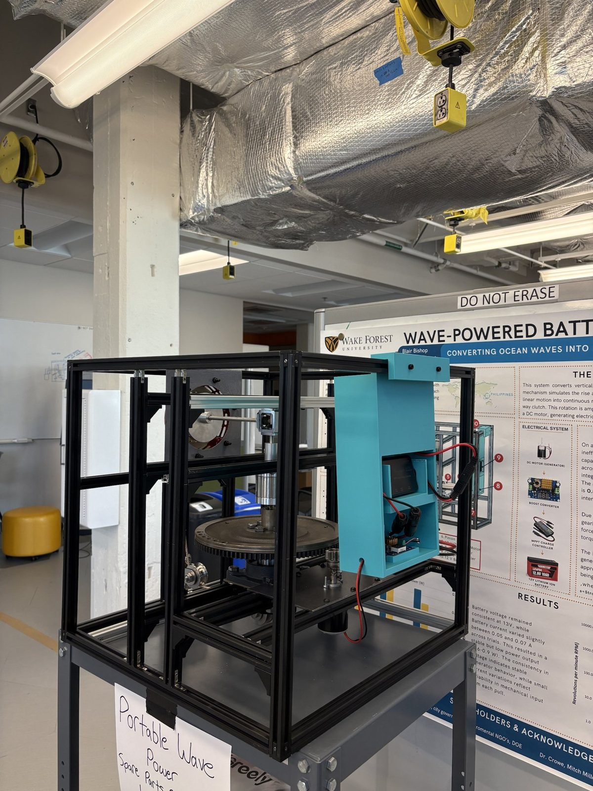